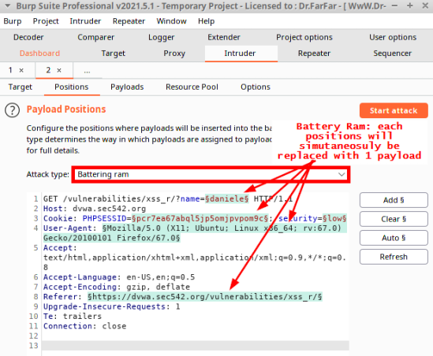
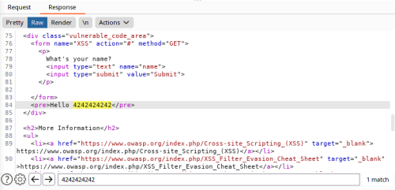

Interception Proxies
With Burp and ZAP, our interception proxies of choice, we can
perform fuzzing against the application with a goal of discovering XSS flaws.
Some examples of input that
could potentially be relevant to XSS that might not appear as obvious injection points are:
◇
User-Agents
◇ cookies
◇ session tokens
◇ custom HTTP headers
◇ HTTP referer (
https://datatracker.ietf.org/doc/html/rfc2616#section-14.36)
◇ ...
Burp Intruder: Reflection Tests
•
Battering Ram: An attack type in Burp Intruder that
submits one payload at multiple positions simultaneously
•
Grep
Payloads: An option in Burp Intruder that searches the application’s responses for the submitted
payload
•
Battering Ram + Grep Payloads: Enables us to
simultaneously fuzz multiple injection points per request to see if any of them are found in a
response
Burp Intruder workflow:1. first employs the
Battering Ram attack type coupled with Grep Payloads.
1)
Battery Ram With Burp Intruder we are not limited by where we can
attempt injection. With Burp Intruder, it is just another position that can be set.
Burp Intruder → Positions
→ Attack Type: Battery Ram
 2)
Grep: Payloads
Intruder → Options → Grep-Payloads
This technique has Burp look in the response traffic
for the payloads we inject.
So, if we inject 42424242, then Grep - Payloads will look within the responses for
evidence of that string.
This means we can easily look for reflected input.
3) Under Intruder → Payloads
▪ we can chose
our payload list
▪ add the payloads manually
5) Now we can Start the attack (Intruder → Positions → Start attack)
6) Results
1- We need to notice
if any row of the column "P grep"(Payload grep) is checked.
A check box indicates that our payload
(in this case, 42424242) was found in the response traffic.
2- Perform a search in the response, to show us how many time our string
occurs in the response
2. If in
the Respnse we had more than a match for reflection, we can follow up with using the
Sniper attack to determine which individual the specific injection
points resulted in reflection
Intruder → Positions → Attack type: Sniper